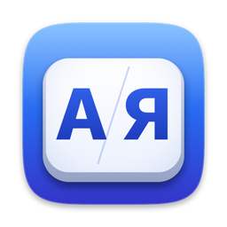

Cambia de distribución con Cmd+Shift
Pulsa Cmd+Shift y la distribución del teclado cambia, igual que con Punto Switcher en Windows. Atajos como Cmd+Shift+Z no se tocan.
Pulsa Cmd+Shift y la distribución del teclado cambia, igual que con Punto Switcher en Windows. Atajos como Cmd+Shift+Z no se tocan.
Pulsa «Descargar para macOS». LangSwitcher.dmg se guardará en la carpeta «Descargas».
Abre el DMG y arrastra LangSwitcher a la carpeta «Aplicaciones».

macOS avisa de que la app es de un desarrollador no identificado, porque aún no está notarizada. Abre «Ajustes del Sistema» → «Privacidad y seguridad» y pulsa «Abrir igualmente».
«LangSwitcher» se ha bloqueado para proteger tu Mac.
Abrir igualmenteElige «Conceder permiso…» en el menú de la app, o activa LangSwitcher en «Ajustes del Sistema» → «Privacidad y seguridad» → «Monitorización de entrada».
El indicador de distribución (EN/RU) aparece en la barra de menús. Pulsa Cmd+Shift para cambiar y, si quieres, activa «Abrir al iniciar sesión» en su menú.